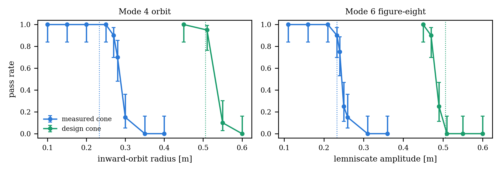
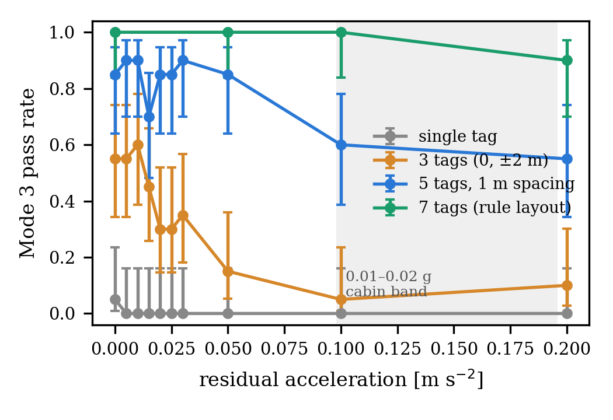
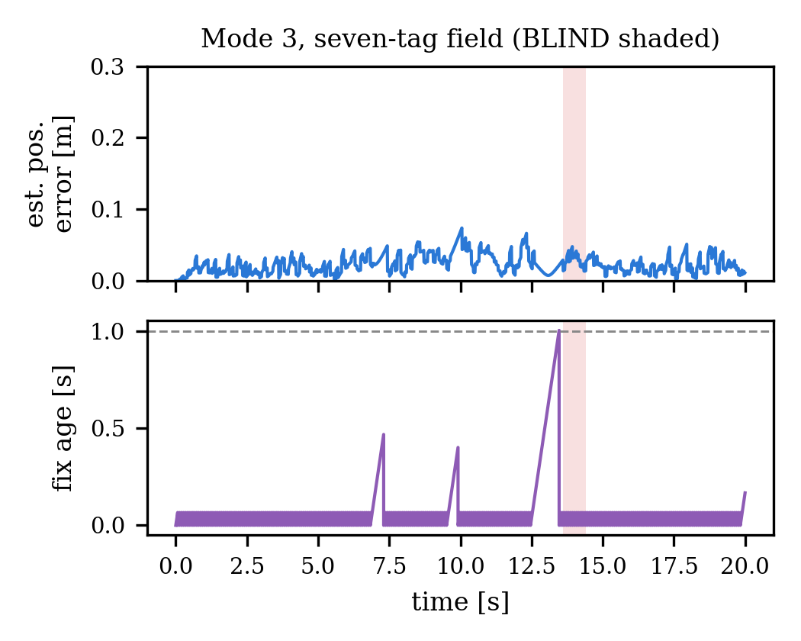

Home / Simulations / Study 06
ORBES · MuJoCo Monte Carlo · ORBES case study ↗
Localization-aware
mission design
I sized each flight mode to what the tag camera can see, then tested the rule in 3,817 MuJoCo runs. It found both failure boundaries within one sweep step.
1 m altitude · 0.149 m tag · 28.8 × 21.4° measured cone · 0.075 s latency · bench-calibrated IMU · randomized mass and camera mount
Design vs measured cone
Sizing rule| Rule | Design value | Measured value | Flown value | MC pass k/n |
|---|---|---|---|---|
| Camera half-FOV | 44.3 × 33.6° | 28.8 × 21.4° | n/a | n/a |
| Footprint half-width at 1 m | 0.590 m | 0.317 m | n/a | n/a |
| Orbit radius | 0.50 m | Boundary near 0.28 m | 0.25 m | 48/50 |
| Lemniscate amplitude | 0.476 m | Boundary near 0.24 m | 0.21 m | 50/50 |
| Mode 3 tag field | 3 tags | 7 tags | 7 tags | 49/50 out, 50/50 back |
| Residual acceleration | 0.03 m/s² | 0.05 m/s² (17/20) | n/a | 12/20 at 0.10 m/s² |
Flown values are simulated runs, not hardware flights.
Results and animations
Figures 6A to 6C · videos


Video, muted · 10 sHover to play · click to enlarge
50 Mode 3 runs: 44 pass, 6 fail
Video, muted · 10 sHover to play · click to enlarge
The same 50 runs in 3D
Video, muted · 9 sHover to play · click to enlarge
The same 50 runs as a fleet
Video, muted · 78 sHover to play · click to enlarge
Six flight modes in simulation
Learned residual vs DLQR
Negative result · 200 held-out cellsA PPO policy trained for 3 million steps added position corrections on top of the DLQR controller, using only the onboard estimate as input. On 200 held-out Mode 3 cells on the measured camera cone, every run with the policy failed.
With the residual set to zero, the evaluation harness reproduces plain DLQR exactly, so the drop comes from the policy. Both arms fly the same paired cells with residual accelerations of 0.05 to 0.20 m/s².
Video, muted · 12 sHover to play · click to enlarge
The same 12 cells, with and without the policy
The counters in the video (4 of 12 and 0 of 12) describe this subset. The headline rates above come from all 200 cells.